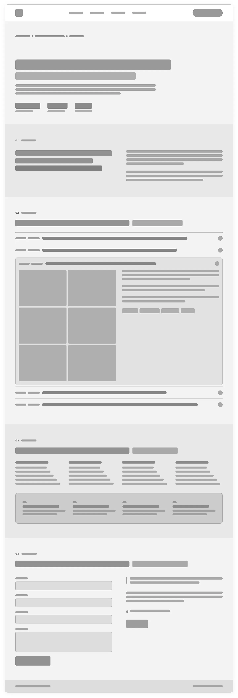
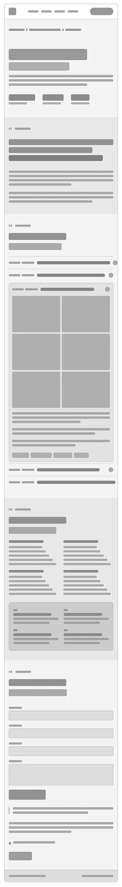
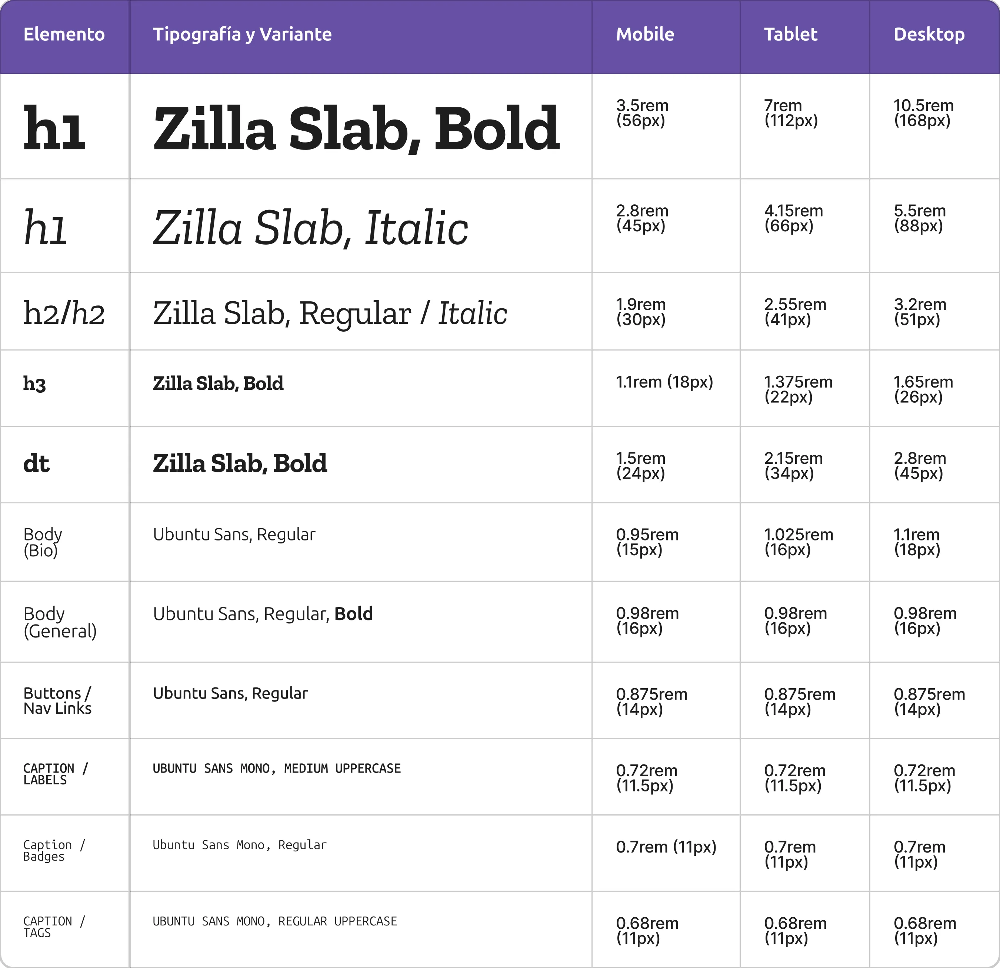
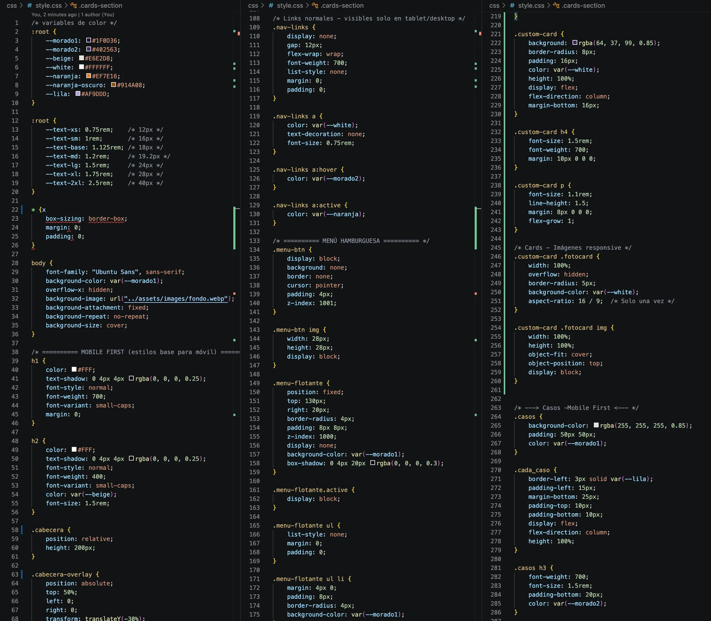

Sistema de Color y Accesibilidad
Se construyó un sistema cromático jerarquizado
basado en tonos púrpura y lavanda con acentos
cálidos. Cada combinación fue validada con pruebas
de contraste WCAG 2.1 AA para asegurar legibilidad
cómoda tanto en temas claros como en interfaces
nocturnas.
Elegí Zilla Slab y la familia Ubuntu Sans para
construir un sistema tipográfico con identidad
propia, capaz de proyectar profesionalismo sin
perder la cercanía con el usuario. Esta combinación
fusiona la tradición editorial con la precisión del
diseño digital moderno. Justificación técnica Ambas
fuentes responden a los requerimientos de
legibilidad y rendimiento en pantallas de alta y
baja densidad. Zilla Slab (diseñada en 2017 por
Typotheque para Mozilla) mantiene trazos firmes que
sostienen la definición gráfica en tamaños grandes.
Por su parte, la familia Ubuntu Sans (diseñada en
2010 por Dalton Maag) optimiza el ritmo de lectura
con sus terminaciones abiertas; sumado a esto, su
versión monospaciada (Ubuntu Sans Mono) aporta un
ancho fijo clave para estructurar la microtipografía
—como fechas, métricas y etiquetas— manteniendo el
orden visual en formatos reducidos. Justificación
visual El sistema se sostiene en un contraste de
polaridad entre los remates en bloque (slab serif)
de Zilla Slab y las formas limpias y redondeadas de
Ubuntu Sans. Zilla Slab actúa como un "ancla visual"
para los títulos, ofreciendo un matiz editorial
refinado y una jerarquía clara frente a las fuentes
sans-serif convencionales. A su vez, Ubuntu Sans
suaviza la interfaz con curvas fluidas, garantizando
una estética limpia y funcional que distribuye el
texto con equilibrio y sin saturación. Justificación
psicológica El maridaje busca equilibrar autoridad y
empatía. Zilla Slab evoca estabilidad, firmeza y
estatus profesional en los encabezados principales,
transmitiendo la seguridad de un producto bien
consolidado. En contraparte, Ubuntu Sans inspira
apertura y confianza gracias al concepto de
"humanidad y comunidad" asociado a su origen; sus
trazos redondeados reducen la carga cognitiva del
usuario, generando una lectura amigable y accesible
que hace que la interfaz se sienta honesta, moderna
y cercana.Justificación de la escala tipográfica
La escala tipográfica establece una jerarquía visual
fluida, accesible y adaptable a cualquier
dispositivo. Organiza la lectura en tres niveles
clave: Zilla Slab destaca los titulares con
carácter, Ubuntu Sans garantiza una lectura limpia
en el cuerpo de texto y Ubuntu Sans Mono aporta
precisión a los datos pequeños. Además, utiliza
unidades relativas y escalado fluido (clamp()) para
ajustar los tamaños de forma dinámica según el
tamaño de la pantalla, manteniendo proporciones
armónicas y respetando los estándares de
accesibilidad (WCAG).
Rol y Responsabilidades Como diseñadora UX/UI, fui responsable del diseño de alta fidelidad, de varias versiones del sitio, desarrollo en HTML/CSS, implementación de SEO, diseño y envío de mailings, investigación de usuarios y realización de tests de usabilidad tipo guerrilla para validar y mejorar la experiencia. Iteración con el cliente y asesoría permanente.
Estructuración y Wireframing
En esta etapa se mapearon las tareas principales de
los usuarios para crear una navegación sin
fricciones. Se probaron distintas estructuras en
baja fidelidad antes de avanzar a componentes
definitivos, garantizando flujos ágiles y directos
hacia los objetivos clave de la plataforma.


Tipografía
Elegí Zilla Slab y la familia Ubuntu Sans para construir un sistema tipográfico con identidad propia, capaz de proyectar profesionalismo sin perder la cercanía con el usuario. Esta combinación fusiona la tradición editorial con la precisión del diseño digital moderno.
Justificación técnica
Ambas fuentes responden a los requerimientos de legibilidad y rendimiento en pantallas de alta y baja densidad. Zilla Slab (diseñada en 2017 por Typotheque para Mozilla) mantiene trazos firmes que sostienen la definición gráfica en tamaños grandes. Por su parte, la familia Ubuntu Sans (diseñada en 2010 por Dalton Maag) optimiza el ritmo de lectura con sus terminaciones abiertas; sumado a esto, su versión monospaciada (Ubuntu Sans Mono) aporta un ancho fijo clave para estructurar la microtipografía —como fechas, métricas y etiquetas— manteniendo el orden visual en formatos reducidos.
Justificación visual
El sistema se sostiene en un contraste de polaridad entre los remates en bloque (slab serif) de Zilla Slab y las formas limpias y redondeadas de Ubuntu Sans. Zilla Slab actúa como un "ancla visual" para los títulos, ofreciendo un matiz editorial refinado y una jerarquía clara frente a las fuentes sans-serif convencionales. A su vez, Ubuntu Sans suaviza la interfaz con curvas fluidas, garantizando una estética limpia y funcional que distribuye el texto con equilibrio y sin saturación.
Justificación psicológica
El maridaje busca equilibrar autoridad y empatía. Zilla Slab evoca estabilidad, firmeza y estatus profesional en los encabezados principales, transmitiendo la seguridad de un producto bien consolidado. En contraparte, Ubuntu Sans inspira apertura y confianza gracias al concepto de "humanidad y comunidad" asociado a su origen; sus trazos redondeados reducen la carga cognitiva del usuario, generando una lectura amigable y accesible que hace que la interfaz se sienta honesta, moderna y cercana.
Justificación de la escala tipográfica
La escala tipográfica establece una jerarquía visual fluida, accesible y adaptable a cualquier dispositivo. Organiza la lectura en tres niveles clave: Zilla Slab destaca los titulares con carácter, Ubuntu Sans garantiza una lectura limpia en el cuerpo de texto y Ubuntu Sans Mono aporta precisión a los datos pequeños. Además, utiliza unidades relativas y escalado fluido (clamp()) para ajustar los tamaños de forma dinámica según el tamaño de la pantalla, manteniendo proporciones armónicas y respetando los estándares de accesibilidad (WCAG).

Maquetación Limpia y Hand-off
El maquetado utiliza etiquetas nativas de HTML5
(`header`, `main`, `section`, `article`),
organizadas para facilitar la interacción con
tecnologías asistivas y acelerar la posterior
integración con el equipo de desarrollo front-end.
